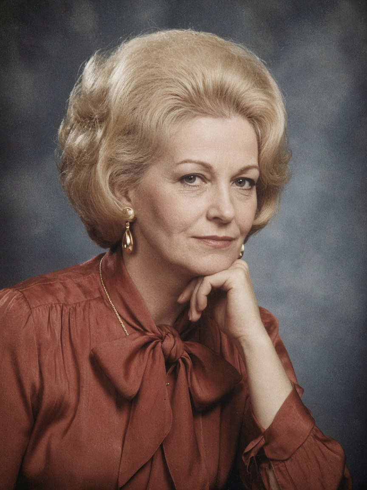
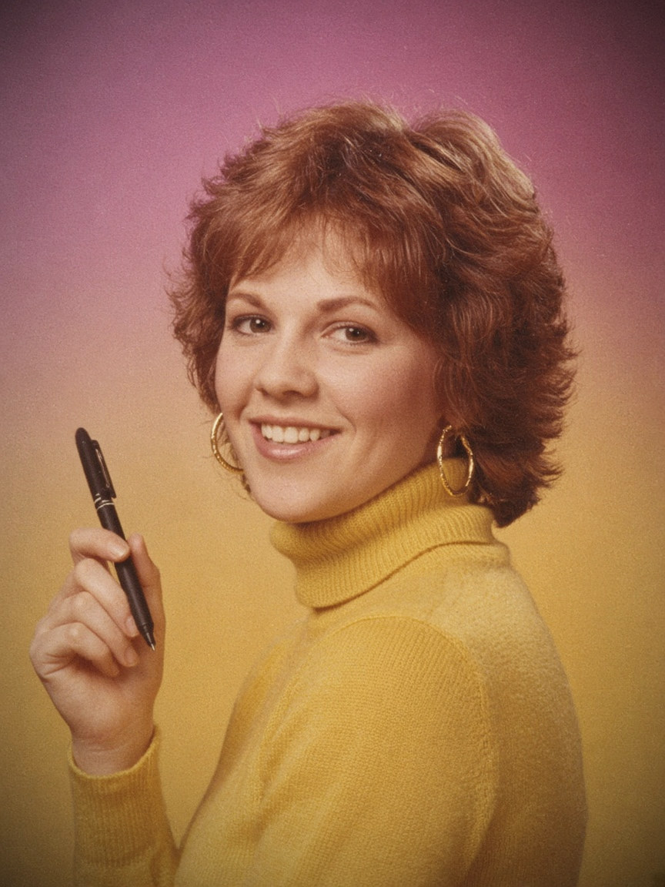
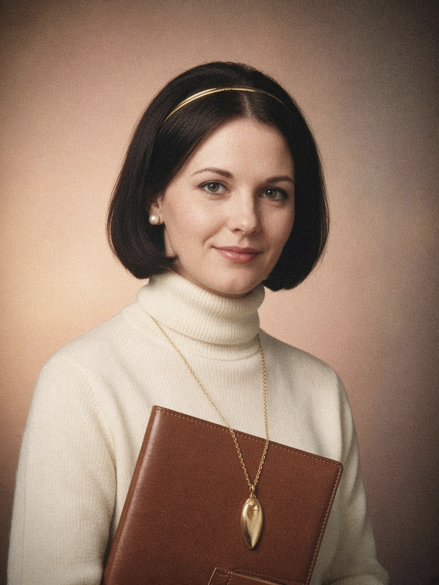
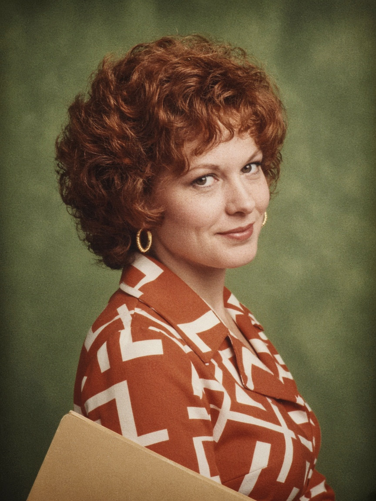

The loft, West 26th Street · Staff of fourteen, and the company cat
The Team
A small staff, a large ashtray, and a philosophy about plants.

Gautier van der Poppelen
Creative Director & Owner · The Ad Man
Genius of the whole operation. The comics are the masterpiece. The advertisements pay the rent.

Frank
Company Cat · Chief Morale Officer
Face of Cat People since 1958. Semi-retired. Never leaves the Creative Director’s side. Sits in on everything.

Miek van Tiffany
Master Stylist
The glue of the company, always on top of things. Optimistic about everything, including Mondays — an outlook out of this world.
We mean to keep her as long as the stars allow. A massive Beatles fan and music historian.

Gardon Mc.Hardon
Senior Art Director, Television & Film · Last Hire
The last name on the letterhead. Arrived with a kilt and a cigarette and has put down neither.

Lillian Harrow
Director
Runs the floor. Has never been late. Has been unimpressed.

Marlene Quinn
Art Director
Draws only the Ace stories. Studio policy, and also the lawyers’.

Patty DiMarco
Graphic Designer
Letters the word balloons. Will not letter a rate card.

Della Rhodes
Graphic Designer
Colour, boards, and the good ink. Will not illustrate a toaster.

Whit Gant
Copywriter
Writes twelve words and takes the afternoon. The thirteenth is billed separately.

Rex Holbrook
Film Director
Owns a megaphone for a closet. Says “that’s a wrap” at lunch.

Tess Lang
Personal Assistant to the Creative Director
Keeps his calendar, his cigarettes, and the plant.

Bonnie Sills
Secretary
Types ninety words a minute, including the ones she does not send.

Kay Ettinger
Secretary
Files what Bonnie will not file. Has never lost a memo.
Helen Brubaker
Accountant
The books close when she says they close.

Dotty Kranz
Cook
Lunch is at one and not a minute later. The soup has a following.
Junior desks

The Annual Strategy Retreat · 1974
Team Building
The Creative Director and the last hire inspect the course, then the trolley.
The photographsFormer Employees
Fourteen on the letterhead. Frank is not typed on it. He sits on it. Gardon Mc.Hardon is the last hire. Chuck Daley is on television, which he will tell you is harder. The art department illustrates only the Ace stories.